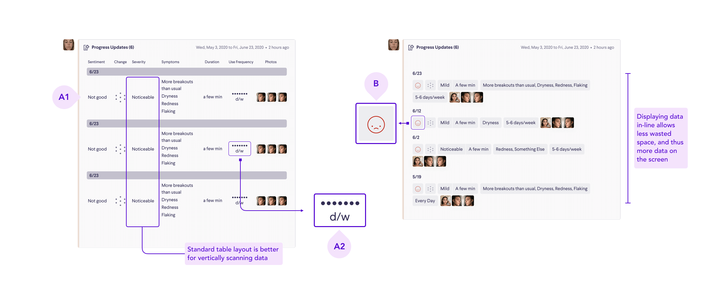
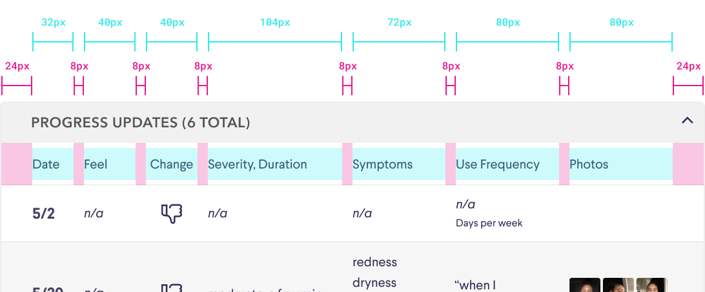

Curology: More data, better care – a UX case study
Progress bundling for Curology
What is Curology?
Curology is the leading company in building the next generation of skincare through customized treatment plans and formulas with powerful prescription ingredients for acne and anti-aging.
Role
As the designer on the project, I helped define the problem via conversations and research with the medical team lead, prototyped different ways of solving the problem, iterated through multiple rounds with the medical team lead, and specced the pitch
Timeline
3 weeks
Problem
One of the Product Design team's ambitious projects is launching a new progress tracking feature called Progress, so that patients could track their skin's reaction to their formula. The hypothesized effects are multi-fold, including better efficacy because we are better able to see patients' skin reaction, better retention and higher order value per customer, and more brand connection.
The problem I took the lead on relates to one of the effects of having Progress. Previously, providers made treatment decisions based on the text and pictures sent to the provider when a patient wanted to report an issue with their formula. The new Progress feature allows patients log their skin reaction and upload pictures ad-hoc as opposed to communicating directly with a provider. This means patient files could amass anywhere from a handful to dozens of Progress updates between visits with their provider. Because of this, we realized we needed to redesign our internal tools to show a much larger amount of data than before.
How might we display that new flood of patient data to medical providers in a way that helps them understand patients more and make a more informed treatment decision?

User need: Medical providers have very little time for each patient, so they need to understand what is going on with the patient in as little time as possible, with no confusion. They also don't want their workflow to be drastically changed or interrupted.
Understanding the complexity
Because the basic questions of the patient-facing side of Progress had already been approved and vetted, my first step was to understand what questions we are asking patients, which questions have answers that are magnitudinal, and which questions have answers that we have corresponding icons for in our design system.
Divergent exploration
With the breadth of the questions in mind, I explored several different ways to present the possible patient answers in an interactive manner, each with benefits and drawbacks. The goal of this exploration is for everyone on the team to be able to grasp the tradeoffs of these vastly different paradigms, both in engineering and how they fit into the medical team workflow.


Masonry layout
This layout prioritizes at-a-glance viewing of information from a single update with photos upfront, while other individual updates are navigated along a horizontal timeline, keyed green or red based on the reported sentiment. Masonry allows easy insertion of unanticipated progress user answers in the future. Providers can even reconfigure order to their preference.
Table layout
This layout prioritizes quick scanning of data both horizontally in a single update and vertically down a specific field. Some information that is less useful can be hidden in an accordion view, allowing the table to display a lot of information without scrolling.
Graph layout
This layout visualizes the answers that have magnitude on a graph using a graphing library, allowing providers to notice trends across time. The exact user responses are also displayed on the side when the provider hovers over a date on the graph.
Insights from testing and discussion
- In the existing timeline, providers are very used to lots of scrolling up and down to access various pieces of information
- Providers really use all of the information we ask in Progress to paint a complete picture of where the patient is in their care
- In the current timeline, providers look at photos almost always, but they usually read the data first and then look at photos
Juggling lots of moving parts
Even with user feedback on the initial exploration, there was a large amount of uncertainty around the project due to dependencies on other ongoing work. For example:
- The provider timeline, which my feature sits in, is being redesigned. Should my design fit into the old timeline or the new timeline? What is the timeframe to launch for both of these projects so we know which provider timeline will be in place by the time this feature is built?
- Because the patient-facing Progress feature needs to launch at the same time as this feature, we don't really know how many updates patients will be uploading between provider visits, so what information volume should this design be optimized for?
- The Progress questions we are asking patients can change and be layered upon as the patient progresses through their patient journey, so how do we design an information display when the information coming in can be variable?
Defining constraints
With the large amount of uncertainty around the requirements of this feature, I worked with the product manager to nail down a set of assumptions in order to launch and learn more.
I defined with the PM a set of requirements for what we need at this moment in time:
- Can handle up to 20 updates
- Don't overoptimize, so design something that is implementable within 3 weeks appetite
- All questions could be mapped to a set architecture (after discussion with the medical team)
Narrowing down: table wins
In light of these constraints and user testing, the table proved to be the best solution for various reasons:
- It is closest to following providers' current interaction pattern
- It was the most learnable and usable in user testing
- It was most capable at accomodating 20 updates
- With a set question architecture, it was no longer troubled by issues with a defined schema
- It cut engineering load compared to the other paradigms
So I narrowed down to explore more detailed design decisions withing the table paradigm.
How might we balance scannability with compactness?
How might we compare the benefits of icons with extensibility of text?
How might we make it clear what triggered the interaction?

Handover
Having worked through these issues with guerilla testing with the medical team lead and a critique within the product design team, the table design was close to being finalized.
Through the design process I had used edge cases to make sure the design would not need adjustment at the end. However, through discussion with the medical team, a few changes were introduced, for example an accordion button to roll up the progress bundle. These were put through some final testing and iteration.
Before writing the final documentation, I also had a discussion with the engineering manager to check the final feasibility of the design.
The final design was specced and put into a pitch in the Shape Up process.
Conclusion
With a table layout, I was able to lead the team to a design that was highly effective and could be implemented quickly enough so that the team could learn more about how the Progress feature performs out in the real world. The table view puts a large volume of patient data into a succinct view that allows providers to successfully understand the patient's triumphs, struggles, confidence, and frustration in between visits.

The impact of this work is that the team is able to provide better, more accurate, and more responsive adjustments to the patient's treatment through more data, which helps patients while also helping Curology — the more efficacious Curology's care is, the more likely it is the patient will stay and recommend the subscription to friends. The Progress feature is being rolled out via cohort testing with patient engagement, satisfaction, and churn monitored against the control.
Curology's brand pillars are emphasizing the personal journey, celebrating personal achievements rather than societal standards of beauty, and being frank about efficacy via our team of experts with big hearts. With this project, the team has shepherded Curology's digital experience one step closer to its brand mission.
To see more about my summer at Curology, see here.